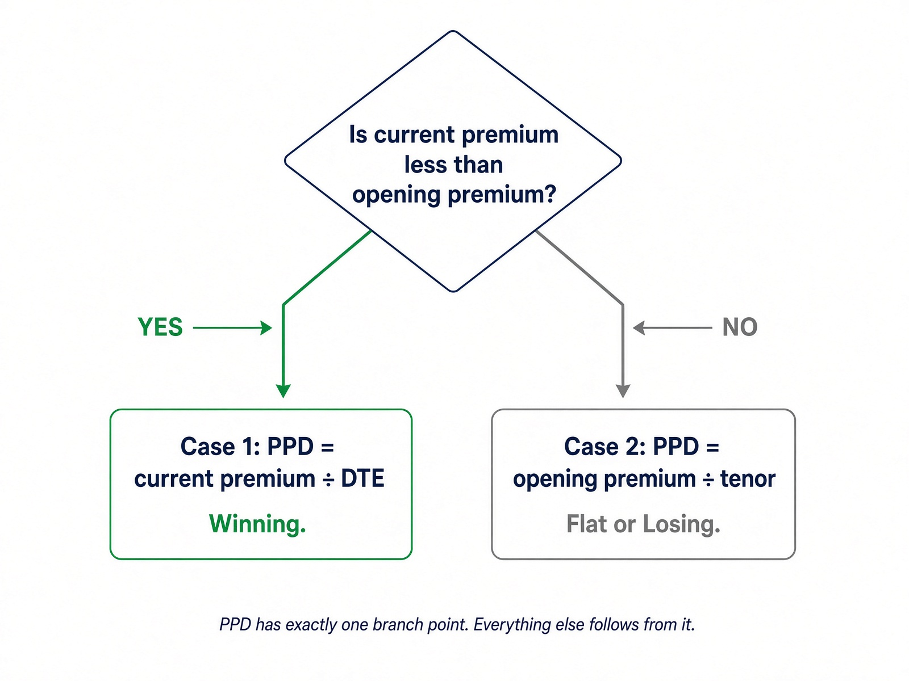
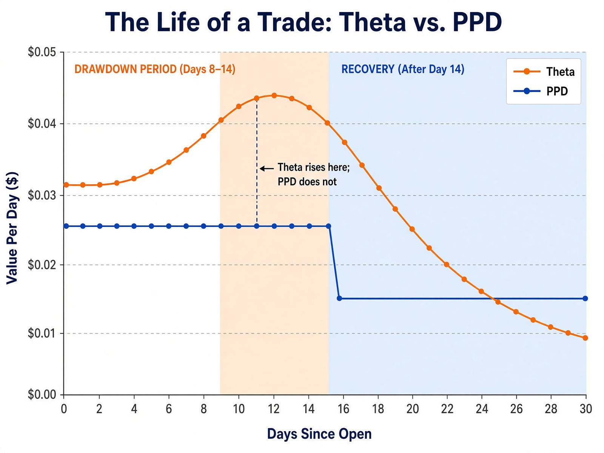
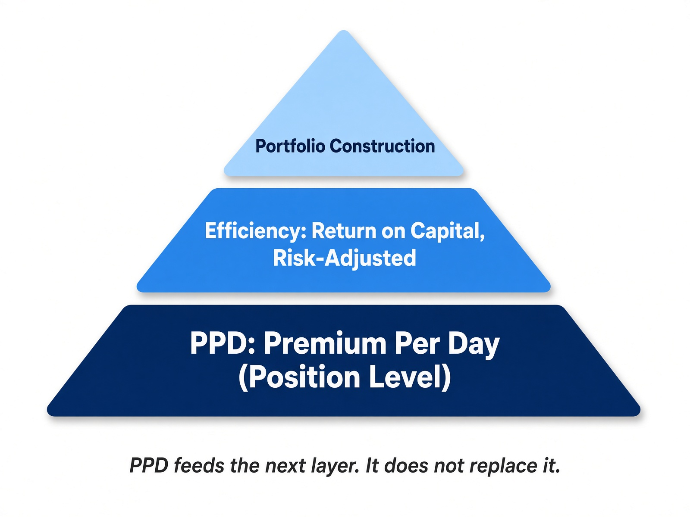
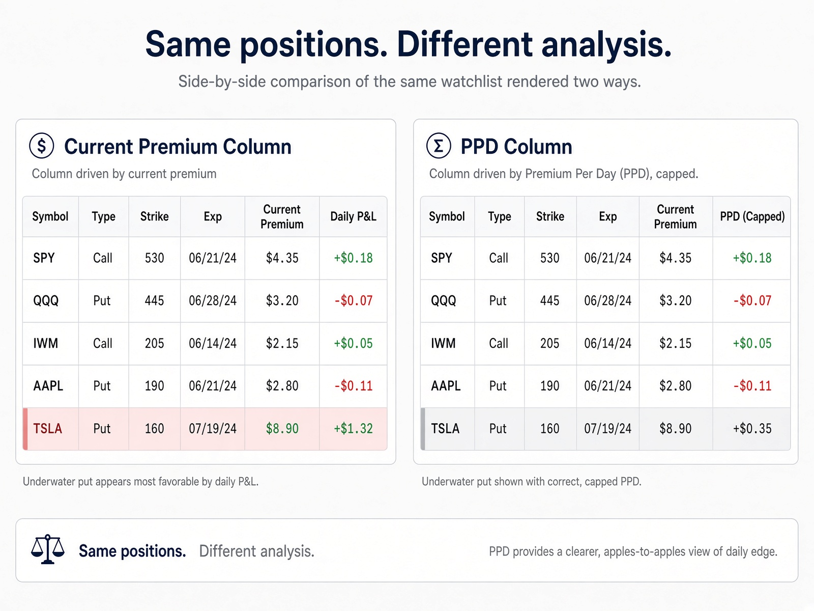

I have executed more than 3,700 short-option trades over the past thirteen months, split between cash-secured puts and covered calls. I kept encountering the same analytical blind spot. Traders instinctively reach for theta, assuming daily decay will reveal what they are collecting per day. It does not. Theta tracks the option's current market value, and current market value is different from premium collected.
I needed something simpler: a number that would tell me, every day, how much premium I was actually collecting on a given position, without factoring in capital, efficiency, or hedging math. So, I built PPD, or Premium Per Day, and I have used it on every trade since.
Before building this metric, I searched for a published treatment at this level of practical detail and found little. The closest is Markus Heitkoetter's piece on PPD, "When to Take Profits on Options: Let Options Expire? Take Profits Early?", which is worth reading if you have not seen it. What follows is how I define the term.
The Problem
Every short-option trader eventually asks the same question: how much am I collecting per day on this position? The usual answers, theta, daily decay, a column that divides today's mark by days remaining, all share one weakness: they track the option's current market value, not what was actually collected. That distinction is invisible when a trade is going well. It becomes costly the moment the trade turns.
Consider a cash-secured put sold for one dollar. A week later, the stock drops and the option is now worth a dollar fifty. Daily theta at that moment might read fifteen cents a day, the highest reading of the week, suggesting you are earning more than ever. You are not; you are losing. Theta describes how the option's price moves with time, not how much premium you collected. It rises exactly when your position is at its worst because it is tracking the mark, not your collection. That is the underlying gap: the Greeks describe the option's behavior, not what you have actually taken in.
The Four Inputs
PPD relies on only four figures, already on the trade ticket. Keep the units consistent, per share or per contract, never mixed.
- Opening premium: the premium collected when the option was sold.
- Current premium: the cost to close the position today, using the ask you would actually pay, not the midpoint.
- DTE: days remaining until expiry.
- Tenor: total days between open and expiry.
PPD does not require the strike, the capital, the hedge, or the portfolio. Those belong to later KPIs.
The Definition
These four figures produce two cases, decided by one comparison: is the option cheaper to buy back today than it was on the day it was sold?

Case 1: Winning — current premium is less than opening premium.
PPD = current premium ÷ DTE
Case 2: Flat or losing — current premium is greater than or equal to opening premium.
PPD = opening premium ÷ tenor
Case 1 is the winning case: current premium has fallen below the amount collected, so the remaining value is the correct numerator and DTE the correct denominator. Case 2 covers everything else: every moment the mark stands at or above opening premium, from the instant the position opens through every moment it spends underwater. A trader cannot collect more than the amount taken in, so the original credit becomes the ceiling, and dividing by tenor, the full life of the trade, keeps that ceiling honest. Using DTE instead while underwater would inflate the number as days pass, even though nothing more has been collected; tenor does not shrink with the calendar, which is why it belongs in Case 2.
The distinction is the entire point. When winning, the live mark shows what remains on the table. When losing, it shows the damage sustained. PPD does not count that damage as income.
A Worked Example
Consider a thirty-day put sold for one dollar, with a tenor of thirty days.
On day one, current premium equals opening premium at one dollar. This does not satisfy Case 1, so Case 2 applies: PPD = $1.00 ÷ 30 ≈ $0.033 per day.
On day ten, assuming the position is winning, the option is now worth $0.40. Current premium is less than opening premium, so Case 1 applies: PPD = $0.40 ÷ 20 days remaining = $0.020 per day. That is lower than day one, and the reason is worth spelling out: dividing by fewer days, 20 instead of 30, would on its own push PPD higher, not lower. What drives the drop is the numerator: the option has given up sixty percent of its value while only a third of the tenor has elapsed, so the collapse in remaining premium outweighs the shrinking denominator.
On day ten, assuming instead the position is losing, the option is now worth $1.40. Current premium exceeds opening premium, so Case 2 applies: PPD remains $1.00 ÷ 30 ≈ $0.033 per day, unchanged. The market shows a loss of $0.40, and PPD does not disguise that; it simply holds the line at what was actually collected.
| State | Current Premium | Case | PPD | What Theta Can Do |
|---|---|---|---|---|
| Day 1, opened | $1.00 | 2 (current = open) | $0.033/day | Roughly matches PPD |
| Day 10, winning | $0.40 | 1 (current < open) | $0.020/day | Falls with remaining value |
| Day 10, losing | $1.40 | 2 (current > open) | $0.033/day | Can rise: the misleading read |
When the position recovers and current premium falls back below opening premium, PPD automatically reverts to Case 1, without any manual reset.

What PPD Is, and How to Use It
PPD is a pure position-level figure. It does not account for capital, hedging, portfolio composition, or efficiency; it answers one question: on this position, today, how much premium per day is actually available? That narrow scope is intentional. PPD is the first step in a larger stack of metrics, not the entire stack: it ranks and manages positions on raw per-day premium, while a second layer, covering efficiency, return on capital, and risk-adjusted comparison, takes PPD as an input and answers the harder question of whether that premium was worth the capital and risk behind it. A trader cannot move to efficiency calculations without a clean per-day figure underneath them.

On a watchlist, PPD serves as the first sort, not the final word: it identifies which candidate is collecting the most premium per day, but it does not indicate whether the name is approved, whether earnings fall within the position's window, or whether the trader already holds too much exposure to that sector. Those filters apply first; PPD then ranks what survives them.
On an open position, PPD is a management signal. When Case 1 applies and the figure is falling, the remaining collection per remaining day is shrinking, often signaling that it is time to ask whether the leftover premium still justifies the leftover risk. When Case 2 applies, the figure stays frozen at the original credit divided by tenor; that freeze is itself the signal that the trader is no longer collecting and is instead holding risk against a credit already received. PPD does not size a trade. A high PPD on a name that should not be held remains a poor trade. Size from risk; rank with PPD.
Common Mistakes
- Do not treat theta as collection. It moves with price, volatility, and time; PPD moves only with premium and dates.
- Do not use full tenor when Case 1 applies. The denominator there is DTE, not tenor.
- Do not compute planned PPD from the midpoint. Current premium should reflect the ask you would actually pay to close.
- Do not read PPD as permission to trade. It ranks; it does not approve. Filters apply first.
- Do not treat multiple high-PPD positions as independent bets if they share a sector or expiration date; that is one bet spread across several tickets.
- Do not annualize a short-dated figure and call it a system. For very short-dated positions, raw PPD plus max loss is the honest read.
- Do not forget the figure is theoretical until the position closes. Slippage, early assignment, and dividends move the realized result, so log realized collection after every close and compare it to the PPD you were watching.

Where PPD Sits
PPD does not determine whether to enter a trade, size a position, hedge it, or rank it against the broader portfolio; capital, efficiency, hedging, strike selection, and portfolio construction are deliberately left to other layers. It reports, every day, the one figure that matters for that position: premium per day, measured in a way that does not increase simply because the trade is losing. Use it to monitor how a position behaves over time, to judge when a winning position has stopped justifying the remaining risk, and as the clean input for whatever efficiency calculations follow.
The Bottom Line
Every short-option position carries a per-day premium, though most traders never observe it clearly, because the tools they rely on are built on current market value, and current market value is most misleading at the exact moment a trade turns. PPD does not follow that market value off a cliff: when winning, it measures what remains against the days that remain; when losing, it caps the figure at the amount actually collected and spreads that ceiling across the full tenor. Two cases, two formulas, one figure that remains honest. That is the core KPI. Every additional layer, efficiency, risk-adjusted return, portfolio construction, builds on top of it.
This article is educational. It describes a position-level indicator the author uses in personal trading. It does not constitute a recommendation to buy or sell any security, nor a claim that any particular result is repeatable. Short options can produce losses larger than the premium received. Traders should understand the product and the margin requirements at their broker before use.